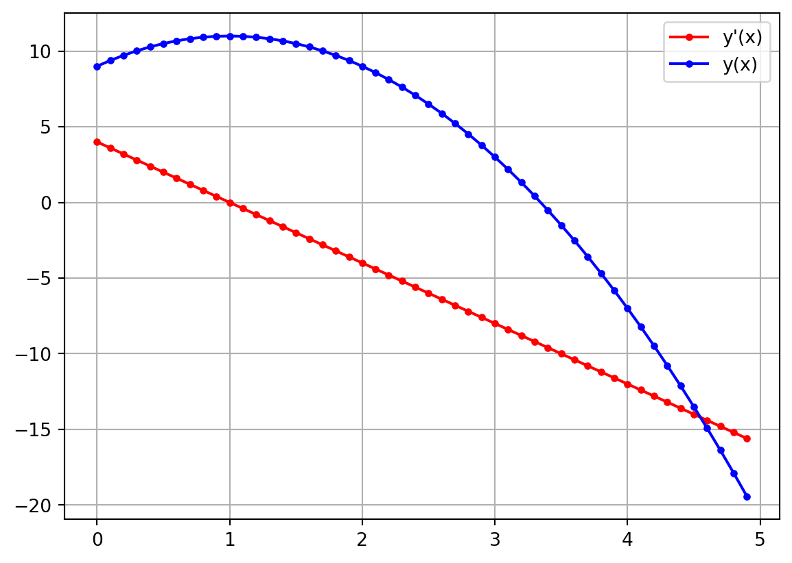

from math import cos,pi
cos(pi/6)0.8660254037844387sympy moduleSympy (pronounced “sim-pie”) is short for symbolic python and can be used to do symbolic math calculations. You may be familiar with other symbolic math packages like Mathematica or Maple. Python’s sympy package will do all of the same things that they will do and it’s nice to not have to switch between two different coding languages.
You should be very comfortable performing simple calculations by now. Up to this point all of the calculations that you have performed have been represented approximately, rather than exactly. For example, \(\cos({\pi \over 6}) = {\sqrt{3} \over 2} \text{ (exact)} \approx 0.8660254 \text{ (approximate)}\) and when you perform this calculation in Python using the math module, the result is approximate:
from math import cos,pi
cos(pi/6)0.8660254037844387\(0.8660254\) is an approximate result; it’s very close to the true value but not exact. Sympy can also perform this calculation and the results are represented exactly.
from sympy import cos,pi,init_printing
init_printing(use_unicode = True)
a=cos(pi/6)
display(a)\(\displaystyle \frac{\sqrt{3}}{2}\)
The init_printing(use_unicode=True) function call tells sympy to display mathematical expressions using “pretty” formatting. Fractions appear with the numerator on top of the denominator, powers are displayed as superscripts, and other mathematical symbols are rendered to make the mathematical expression look right. Sympy can even simplify expressions. For example, \(\sqrt{8} = 2 \sqrt{2}\) and sympy automatically performs this simplification for us:
from sympy import sqrt
sqrt(8)\(\displaystyle 2 \sqrt{2}\)
If you prefer to have your expression approximated numerically, you can use the N function.
from sympy import sqrt,N
N(sqrt(8))\(\displaystyle 2.82842712474619\)
A common equation that comes up in physics is quadratic function with constant coefficients \[ax^2 + bx + c.\] To form this expression, we must first define the variables that appear in the expression: x, a, b, and c. The Symbol function (case sensitive) can be used to define these mathematical variables. The argument to the Symbol function should be a string containing the desired name of the variable.
from sympy import Symbol
x = Symbol("x")
a = Symbol("a")
b = Symbol("b")
c = Symbol("c")
x,a,b,c\(\displaystyle \left( x, \ a, \ b, \ c\right)\)
Instead of using the Symbol function to initialize variables one at a time, you can initialize multiple variables in one line using the symbols function. The argument to the symbols function should be a string with the names of each variables inside the string and separated by a space.
from sympy import symbols
x,a,b,c = symbols("x a b c")
x,a,b,c\(\displaystyle \left( x, \ a, \ b, \ c\right)\)
A mathematical expression, which is composed of multiple mathematical variables (symbols), can now be created using the python variables that we just created
from sympy import symbols
x,a,b,c = symbols("x a b c")
expression = a * x**2 + b * x + c
expression\(\displaystyle a x^{2} + b x + c\)
Expressions can be used to form new expressions by performing mathematical operations on them
from sympy import symbols
x,a,b,c = symbols("x a b c")
expression = a * x**2 + b * x + c
newexpression = x * expression
newexpression\(\displaystyle x \left(a x^{2} + b x + c\right)\)
sympy has several handy functions that can perform algebraic manipulations to your expressions. Below you will find some of the most useful functions for simplifying expressions.
Once an expression is defined, you can evaluate the expression using the subs method. The argument to this method is a dictionary containing the values to be inserted for the associated variables. An example is given below
from sympy import symbols
x,a,b,c = symbols("x a b c")
expression = a * x**2 + b * x + c
evalDict ={a:2,b:4,c:9,x:4}
expression.subs(evalDict)\(\displaystyle 57\)
simplify functionIf you don’t know exactly how you want your expression simplified, you should first try the simplify function. simplify attempts to apply all of the more specialized functions in a smart way to produce a simpler looking result. To use simplify simply send the desired expression in as an argument.
simplify(expression)from sympy import symbols,cos,sin,simplify
x,y,z = symbols("x y z")
a = simplify(x**2 * z + 4 * x *y*z + 4*y**2*z)
b = simplify(cos(x)**2 + sin(x)**2)
display(a)
display(b)\(\displaystyle z \left(x^{2} + 4 x y + 4 y^{2}\right)\)
\(\displaystyle 1\)
When simplify doesn’t do what you were hoping, you’ll have to think a little bit harder about how you want to simplify your expression. The functions described in the rest of this section will help you in your choice.
expand functionThe expand function will put a polynomial function into its canonical monomial form. For example, expanding the following polynomial \[(x + 1)^2\] will produce the standard form of the polynomial \[x^2 + 2x + 1\]. This may not seem like a simplification but nevertheless it can be helpful at times. To expand a polynomial, call the expand function and send in the expression that you want expanded.
expand(expression)from sympy import symbols,expand
x = symbols("x")
a = expand((x + 2) * (x - 3))
b = expand((x+3)**2)
display(a)
display(b)\(\displaystyle x^{2} - x - 6\)
\(\displaystyle x^{2} + 6 x + 9\)
Sometimes expanding an expression can result in a single number due to cancellation.
from sympy import Symbol,expand
x = Symbol("x")
expand((x + 1)*(x - 2) - (x - 1)*x)\(\displaystyle -2\)
factor functionThe factor function does the opposite of expand, taking a canonical polynomial and attempting to factor it into its irreducible parts. For example, factoring the expression below \[x^3 - x^2 + x -1\] will produce \[(x-1)(x^2 + 1)\]
from sympy import symbols,factor
x,y,z = symbols("x y z")
factor(x**2 * z + 4 * x *y*z + 4*y**2*z)\(\displaystyle z \left(x + 2 y\right)^{2}\)
You can also factor an expression that isn’t a polynomial. The following trigonometric function can be factored \[\cos(x)^2 + 2 \cos(x)\sin(x) + \sin(x)^2\] into \[(\sin(x) + \cos(x))^2\]
from sympy import symbols,factor,cos,sin
x,y,z = symbols("x y z")
factor(cos(x)**2 + 2 * cos(x) * sin(x) + sin(x)**2)\(\displaystyle \left(\sin{\left(x \right)} + \cos{\left(x \right)}\right)^{2}\)
collect functionThe collect function gathers terms with common powers in an expression. The function takes two arguments: the first is the expression and the second specifies which variable’s powers should be collected.
collect(expression, variable)from sympy import symbols,collect
x,y,z = symbols("x y z")
collect(x*y + x - 3 + 2 * x**2 - z *x**2 + x**3,x)\(\displaystyle x^{3} + x^{2} \left(2 - z\right) + x \left(y + 1\right) - 3\)
cancel functionThe cancel function is helpful for simplifying an expression by canceling out like terms where possible. This function takes just a single argument, which is the expression to be simplified. The code below will simplify the following expression by canceling the common (x+1) that appears in both the numerator and denominator. \[{x^2 + 2 x + 1 \over x^2 + x}\]
from sympy import symbols,cancel
x,y,z = symbols("x y z")
cancel((x**2 + 2*x + 1)/(x**2 + x))\(\displaystyle \frac{x + 1}{x}\)
trigsimp functionIf you want to use trigonometric identities to simplify your expression use the trigsimp function. For example, most of us know that \(\cos(x)^2 + \sin(x)^2 = 1\). trigsimp will perform this simplification for us.
from sympy import symbols,trigsimp,cos,sin
x = symbols("x")
trigsimp(cos(x)**2 + sin(x)**2)\(\displaystyle 1\)
expand_trig functionexpand_trig is the opposite of trigsimp and usually makes trig functions longer, but that can still be a useful way to view the function. Below we expand the expression \[\sin(x + y)\] using a trig identity.
from sympy import symbols,expand_trig
x,y = symbols("x y")
expand_trig(sin(x + y))\(\displaystyle \sin{\left(x \right)} \cos{\left(y \right)} + \sin{\left(y \right)} \cos{\left(x \right)}\)
sympy can do common calculus operations on symbolic expressions. We’ll cover: derivatives, integrals, and limits.
To calculate the derivative of an expression, use the diff function, which takes two arguments. The first is the expression that you want to take the derivative of and the second is the differentiating variable. In the cell below we calculate the derivative \[{d\over dx} \cos(x)\]
from sympy import symbols,diff,cos
x = symbols("x")
diff(cos(x),x)\(\displaystyle - \sin{\left(x \right)}\)
To take multiple derivatives, simply add more xs to the diff function call. Below we calculate the derivative \[{d^2\over dx^2} \cos(x)\]
from sympy import symbols,diff,cos
x = symbols("x")
diff(cos(x),x,x)\(\displaystyle - \cos{\left(x \right)}\)
diff can perform partial derivatives too. Below we perform the following partial derivatives \[{\partial^2 \over \partial z^2} {\partial \over \partial y} {\partial \over \partial x} \exp(x y z)\]
from sympy import symbols,diff,exp
x,y,z = symbols("x y z")
diff(exp(x * y * z),x,y,z,z)\(\displaystyle x y \left(x^{2} y^{2} z^{2} + 5 x y z + 4\right) e^{x y z}\)
A differentiated function is a sympy expression just as good as any other and we can make a plot of it by evaluating the expression over a grid of values.
from sympy import symbols,diff
import numpy as np
import matplotlib.pyplot as plt
x,a,b,c = symbols("x a b c")
expression = a * x**2 + b * x + c
newexpression = diff(expression,x)
xarray = np.arange(0,5,0.1)
y = [expression.subs({a:-2,b:4,c:9,x:X}) for X in xarray]
yprime = [newexpression.subs({a:-2,b:4,c:9,x:X}) for X in xarray]
plt.plot(xarray,yprime,'r.-',label= "y'(x)")
plt.plot(xarray,y,'b.-',label= "y(x)")
plt.legend()
plt.grid()
plt.show()
Use the integrate function to perform definite and indefinite integrals. For definite integral, the function should be called with two arguments; the first is the expression to be integrated and the second is the tuple containing the integration limits. Below we integrate \[ \int_0^5 \exp(-x) dx\]
from sympy import integrate, Symbol
x = Symbol("x")
integrate(exp(-x),(x,0,5))\(\displaystyle 1 - e^{-5}\)
The limits of your integral can be at infinity by importing oo and using it in the limit specification.
from sympy import integrate, Symbol,oo
x = Symbol("x")
integrate(exp(-x),(x,0,oo))\(\displaystyle 1\)
Multiple integrations can be carried out by adding more arguments to the integrate function, each one specifying the limits for that variable. Here we integrate \[\int_0^\infty \int_0^\infty \exp(-x^2 -y^2) dx dy \]
from sympy import integrate, symbols,oo
x,y = symbols("x y")
integrate(exp(-x**2 - y**2),(x,0,oo),(y,0,oo))\(\displaystyle \frac{\pi}{4}\)
Indefinite integrals can be performed by omitting the limit specification and just indicating the variable to be integrated over. Below we perform the following indefinite integral \[\int \int x^2 + y^2 dx dy \]
from sympy import integrate, symbols
x,y = symbols("x y")
integrate(x**2 + y**2,x,y)\(\displaystyle \frac{x^{3} y}{3} + \frac{x y^{3}}{3}\)
sympy can compute limits symbolically with the limit function. The function takes three arguments: the expression, the variable of interest, and the limiting value for that variable. Below we take the following limit \[\lim_{x \to 0} {\sin(x)\over x}\]
from sympy import limit, Symbol,sin
x = Symbol("x")
limit(sin(x)/x,x,0)\(\displaystyle 1\)
So far we have seen how to construct expressions but not solve equations. The difference is that an equation is expressing some sort of equality between an multiple expressions. For example, the following is an equation \[5 x^2 + 3 x - 2 = 10\] To form an equation, you can use the Eq function. To use it, send in the expression on the left hand side of the equation for the first argument and the expression on the right hand side of the equation for the second argument.
Eq(lhs,rhs)Below we form the equation \[5 x + 2y = 8\]
from sympy import symbols,Eq
x,y = symbols("x y")
equation = Eq(5 * x + 2 * y , 8)
equation\(\displaystyle 5 x + 2 y = 8\)
Once an equation is created, the solveset function attempts to solve the function for the desired variables. To use solveset, pass the equation as the first argument and the variable being solved for as the second. Here we solve the equation \[3 x^2 - 5 x =8\] for \(x\)
from sympy import symbols,Eq,solveset
x = symbols("x")
equation = Eq(3* x**2 - 5 * x, 8)
solveset(equation,x)\(\displaystyle \left\{-1, \frac{8}{3}\right\}\)
In some instances, sympy will not be able to find any solutions to the equation. For example, the solution to \[{\sin(x)\over x} = 1\] cannot be determined through analytical technique even though there are values of x that solve the equation. For situations like this, sympy will output an expression that is meant to indicate that it can’t find a solution.
from sympy import symbols,Eq,solveset,sin
x = symbols("x")
equation = Eq(sin(x)/x, 1)
solveset(equation,x)\(\displaystyle \left\{x\; \middle|\; x \in \mathbb{C} \wedge - x + \sin{\left(x \right)} = 0 \right\} \setminus \left\{0\right\}\)
Some equations really don’t have solutions and sympy can correctly identify these cases. For example, the equation \[\exp(x) = 0\] has no solutions. Let’s see what sympy tells us when we try to solve this one.
from sympy import symbols,Eq,solveset,exp
x = symbols("x")
equation = Eq(exp(x), 0)
solveset(equation,x)\(\displaystyle \emptyset\)
The \(\emptyset\) symbol means an empty set or there are no solutions to this equation.
Some equations have infinitely many solutions. For example the following equation \[x - x = 0\] is satisfied for any complex or real value of \(x\). Let’s see what sympy does when we ask it to solve this one.
from sympy import symbols,Eq,solveset
x = symbols("x")
equation = Eq(x-x, 0)
solveset(equation,x)\(\displaystyle \mathbb{C}\)
The output (\(\mathbb{C}\)) is communicating that the set of all complex numbers are the solution to this equation. (Meaning you can choose any number and it will be a solution to this equation.)
Often you will have multiple equations with multiple unknown variables that you want to solve for. They call this a system of equations. An example would be the following system \[3 x - 5 y = 8\] \[8x + 2y = 3\]. The normal process for solving this system is to solve one equation for \(x\) and then plug the expression that results into the other equation. That equations will only have \(y\) as a variable and you can do algebra to solve for it.
The example given above is called a linear system because none of the variables are raised to a power. To solve a system like this, use sympy’s linsolve function.
from sympy import symbols,Eq,linsolve
x,y = symbols("x y")
equationOne = Eq(3* x - 5 * y, 8)
equationTwo = Eq(8* x + 2 * y, 3)
linsolve([equationOne,equationTwo],(x,y))\(\displaystyle \left\{\left( \frac{31}{46}, \ - \frac{55}{46}\right)\right\}\)
It isn’t hard to find a system of equations that doesn’t have a solution. \[12 x - 3 y = 8\] \[8x - 2y = 3\] As with single equations, sympy will indicate this with the empty set symbol (\(\emptyset\)).
from sympy import symbols,Eq,linsolve
x,y = symbols("x y")
equationOne = Eq(12* x - 3 * y, 8)
equationTwo = Eq(8* x - 2 * y, 3)
linsolve([equationOne,equationTwo],(x,y))\(\displaystyle \emptyset\)
If the equations involve variables being raised to powers, we call it a non linear system and you must use sympy’s nonlinsolve to solve the system. For example, here is a nonlinear system \[3 x^2 + 5 y^2 = 8\] \[8x^2 - 12y^2 = 13\]
from sympy import symbols,Eq,nonlinsolve
x,y = symbols("x y")
eqOne = Eq(3*x**2 + 5*y**2,8)
eqTwo = Eq(8*x**2 - 12*y**2,13)
nonlinsolve([eqOne,eqTwo],(x,y))\(\displaystyle \left\{\left( - \frac{\sqrt{3059}}{38}, \ - \frac{5 \sqrt{19}}{38}\right), \left( - \frac{\sqrt{3059}}{38}, \ \frac{5 \sqrt{19}}{38}\right), \left( \frac{\sqrt{3059}}{38}, \ - \frac{5 \sqrt{19}}{38}\right), \left( \frac{\sqrt{3059}}{38}, \ \frac{5 \sqrt{19}}{38}\right)\right\}\)
sympy variable for \(x\) and then evaluate the following expressions.
# Python code heresympy to solve this equation for the initial velocity. Note \(g = 9.8\) m/s\(^2\) Answer: You should find the initial speed to be \(\approx 18\) m/s# Python code here# Python code here# Python code heresympy variable for \(x\) and then calculate the following derivatives:
# Python code here# Python code here